ラック配置図から入出庫を管理するWebアプリ
2026年4月 作成
技術部
金型在庫管理システムは、技術部のラック（D旧・D新・F北・F南・G北）に保管されている金型の位置を管理するためのWebアプリです。
| 機能 | 内容 |
|---|---|
| 入庫登録 | 金型をラックの空いてる場所に登録する |
| 出庫 | 金型をラックから取り出した記録をつける |
| 検索 | 受付Noで金型がどこにあるか検索する |
| 2個置き | 小さい金型は1つの場所に2個まで登録できる |
| 手動入力 | インゴット・パレットなど金型以外も登録できる |
| 色 | 意味 |
|---|---|
| 緑 | 空き（ここに入庫できる） |
| 赤 | 使用中（金型が入っている） |
| 青 | 選択中（今選んでいる場所） |
| 黄 | 2個目の入力待ち |
エクスプローラーで以下を開く：
\\192.168.1.233\技術部\新製品進捗管理\※技術管理用 新規・更新進捗表※
ブラウザ（Edge）で開きます。
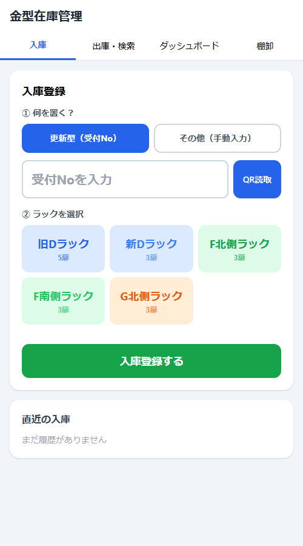
画面上部に4つのタブがあります。
| タブ | 用途 |
|---|---|
| 入庫 | 金型をラックに入れる時に使う |
| 出庫・検索 | 金型を取り出す時、金型を探す時に使う |
| ダッシュボード | 各ラックの使用率を確認 |
| 棚卸 | 定期的な在庫確認に使う |
ラックを選択すると、扉ごとの配置図が表示されます。
| 列 | 意味 |
|---|---|
| 段 | 3段目（上）〜 1段目手前（下） |
| 左 / 中央 / 右 | 扉を開けた時の位置 |
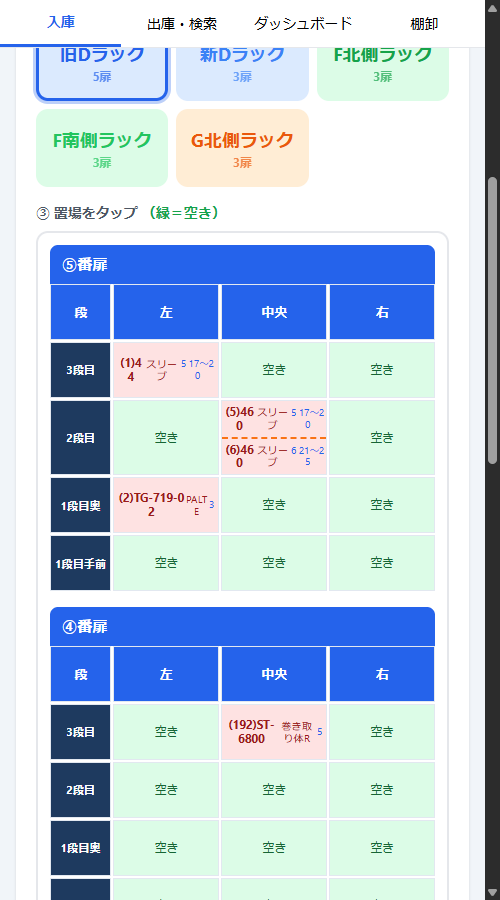
「更新型（受付No）」が選択された状態で、更新型一覧表の管理番号を入力します。
→ 品番・品名・更新型No・客先が自動で表示されます。
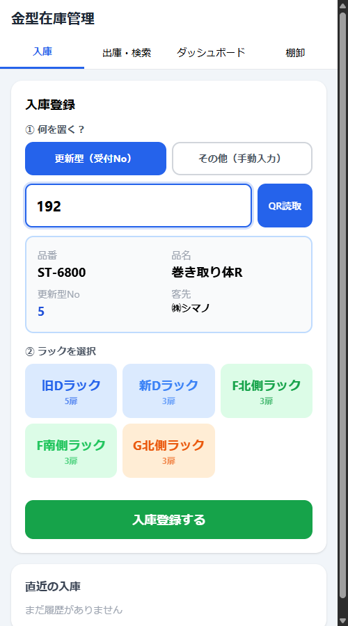
旧Dラック・新Dラック・F北側・F南側・G北側から選びます。
配置図が表示されるので、緑色の「空き」をタップします。
「この場所にいくつ置く？」と聞かれるので「1個」を選びます。
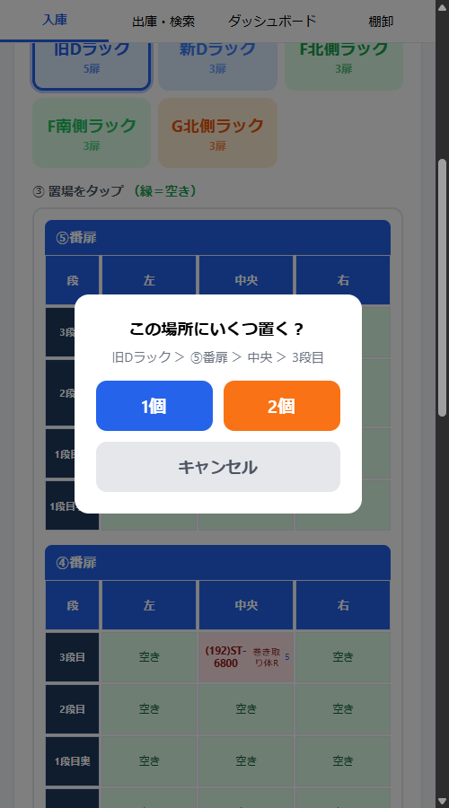
選んだ場所が青くハイライトされ、画面上部に選択中の場所が表示されます。
「入庫登録する」ボタンを押して完了です。
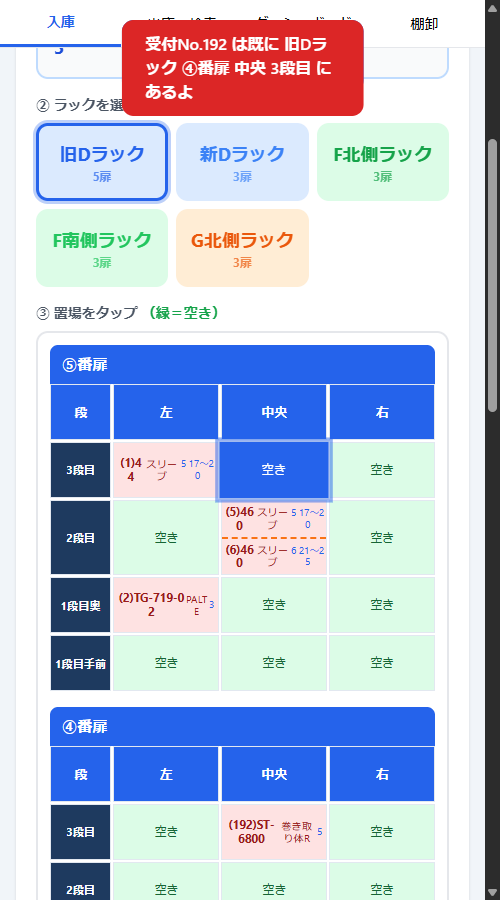
小さい金型は1つの場所に2個まで登録できます。
自動的に画面が上にスクロールし、黄色の帯で「2個目を入力してね」と表示されます。
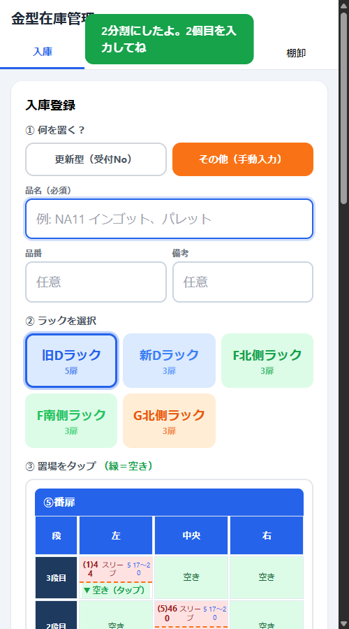
セルが上下に分割され、2つの金型が表示されます。
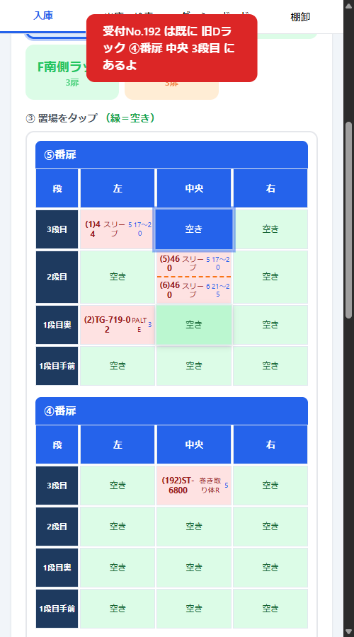
更新型一覧に登録されていないもの（インゴット・パレット・部品など）を置く場合に使います。
入力欄が切り替わります。
例: 「NA11 インゴット」「パレット」など、何を置くかわかるように入力します。
品番・備考は任意です。
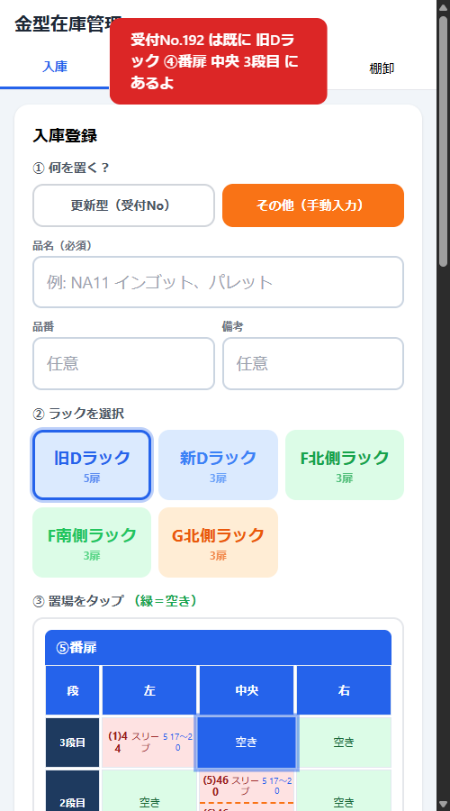
ラック選択 → 空き場所タップ → 入庫登録する
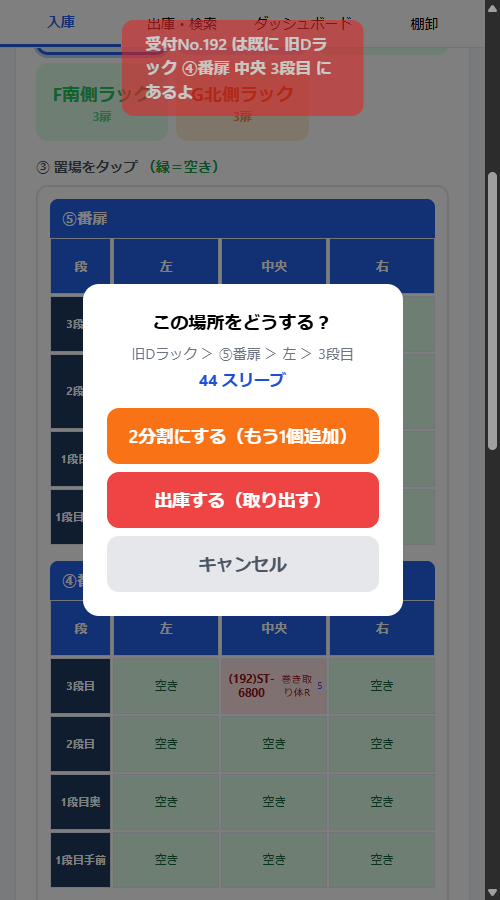
保管場所が表示されます。
2個入っているセルから1個だけ出庫できます。
メニューに以下が表示されます：
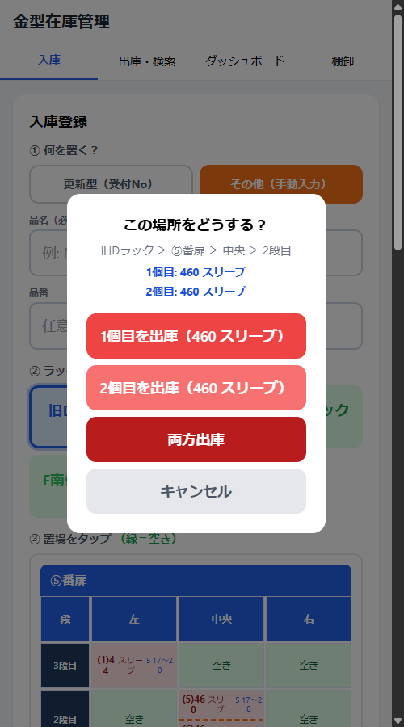
その金型がどのラックのどの位置にあるか表示されます。
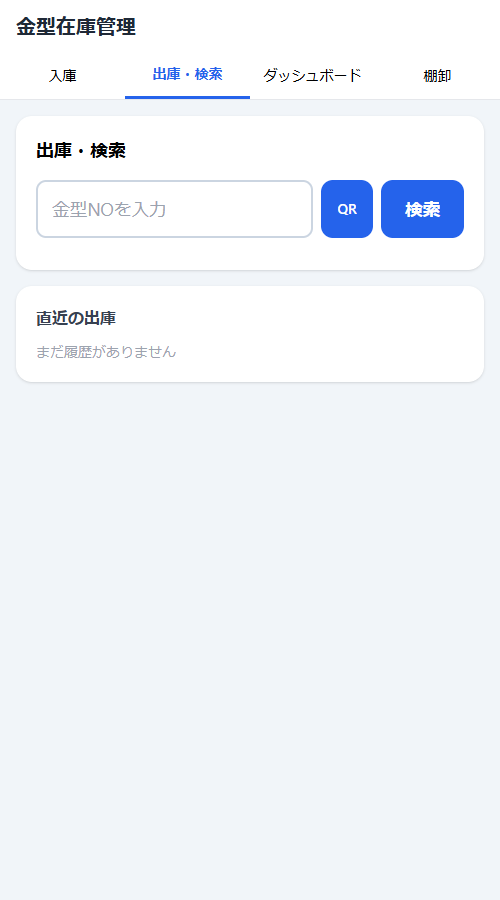
1個だけ入っているセルに、後からもう1個追加したい場合。
セルが分割されて、2個目の入力待ちになります。
→ そのセルをタップして「出庫する」を選べば取り消せます。
→ 現在はPC内のブラウザに保存されるため、他のPCには反映されません。共有フォルダ上のファイルを使えば、最後に保存した状態が反映されます。
→ 更新型一覧表にデータを追加すれば、翌朝の自動更新で反映されます（毎朝7:50に更新）。
→ 「その他（手動入力）」モードで品名を直接入力して登録できます。
→ ブラウザのローカルストレージに保存されるため、同じPCの同じブラウザで開けばデータは残ります。ただしブラウザのデータ消去を行うと消えます。
金型在庫管理システム 操作マニュアル v1.0 — 2026年4月 技術部
※ スクショは各枠をクリックして画像を貼り替えてね